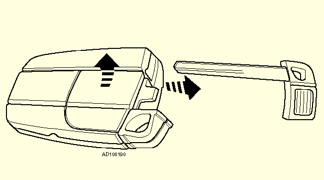

Fonctionnement du système
Avec système d'entrée sans clé
- L'alarme/le verrouillage centralisé peut être désactivé(e) avec la fonction "mains libres":
- S'approcher du véhicule avec la commande à distance, saisir la poignée de porte conducteur ou passager: Le véhicule est déverrouillé et l'alarme est désactivée.
- S'approcher du véhicule avec la commande à distance, appuyer sur le bouton de déverrouillage du coffre/hayon: L'alarme est désactivée et le coffre/hayon s'ouvre.
- L'alarme/le verrouillage centralisé peut être activé(e) avec la fonction "mains libres":
- Couper le contact.
- S'assurer que les portes et le coffre/hayon sont fermés.
- Press lock button on driver's or passenger's door handle for 1 second to lock the vehicle and activate the alarm.
- Maintenir le bouton verrouillage sur la poignée de porte conducteur ou passager enfoncé pour fermer les vitres et le toit ouvrant et replier les rétroviseurs.
Tous les modèles
N.B.: Les fonctions d'alarme/de verrouillage centralisé peuvent être modifiées à l'aide de la commande à distance, du système de commande multifonction embarqué du véhicule et de l'équipement de diagnostic.
- Appuyer une fois sur le bouton verrouillage de la commande à distance Fig. 1 [1] pour activer le verrouillage centralisé et l'alarme.
- Maintenir le bouton verrouillage de la commande à distance Fig. 1 [1] enfoncé pour fermer les vitres et le toit ouvrant et replier les rétroviseurs.
- Appuyer une fois sur le bouton déverrouillage Fig. 1 [2] de la commande à distance pour désactiver le verrouillage centralisé et l'alarme.
- Maintenir le bouton déverrouillage de la commande à distance Fig. 1 [2] enfoncé pour ouvrir les vitres et le toit ouvrant.
- Appuyer sur le bouton déverrouillage Fig. 1 [3] du coffre/hayon de la commande à distance pour déverrouiller le coffre/hayon.
- Il y a une clé d'urgence Fig. 1 [4] dans la commande à distance.
Remplacement des piles - avec système d'entrée sans clé
Contenu spécifique pour le remplacement des piles avec système d'entrée sans clé.
Remplacement des piles - sans système d'entrée sans clé
Contenu spécifique pour le remplacement des piles sans système d'entrée sans clé.
Antidémarrage
Contenu spécifique pour l'antidémarrage.

Programmation
Quand: Ajout ou remplacement de commande à distance.
Comment: Instructions pour la programmation.